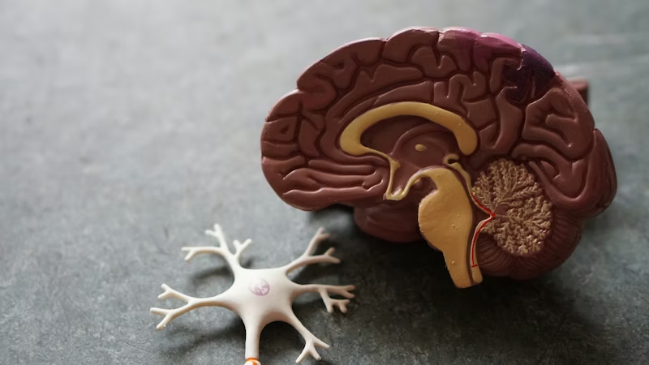
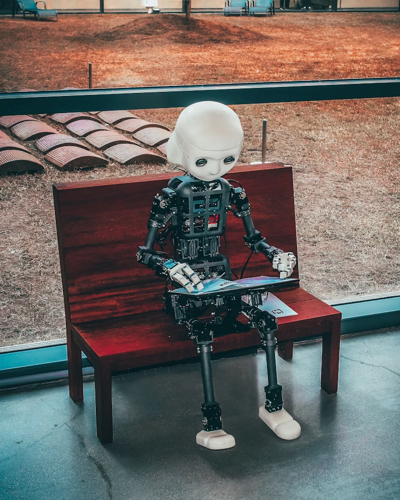
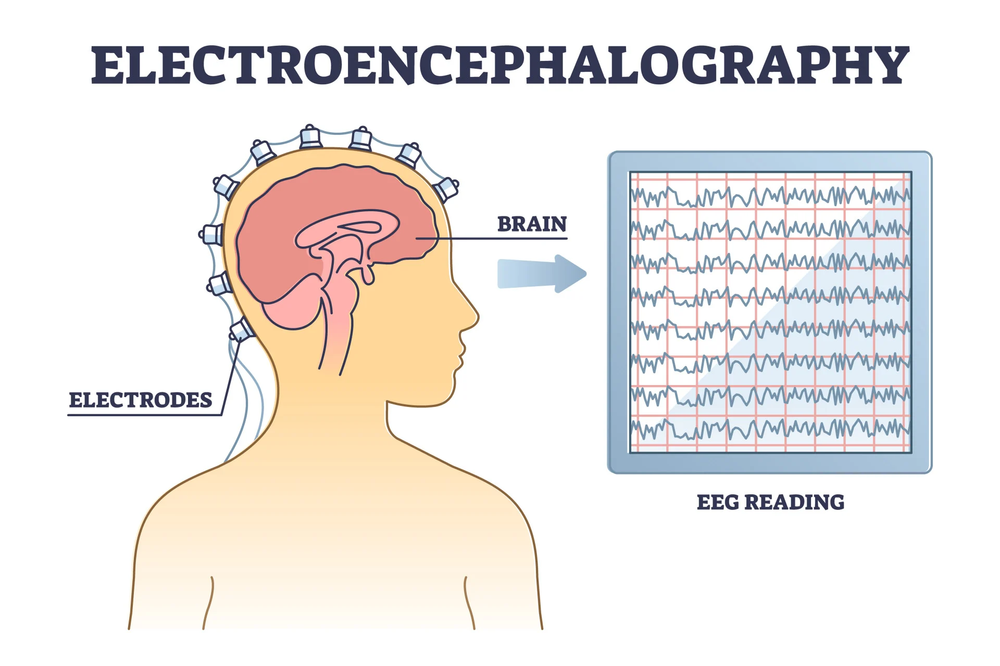

Brain-inspired Computer Audition
Inspired by the human auditory perception mechanism, our research pioneers advanced computational models for speech and audio signal processing. We are dedicated to extracting robust information representations from complex acoustic environments, driving the evolution of computer audition for applications such as healthcare, emotion recognition, and non-invasive disease detection.
Core Technologies

Spiking Neural Networks (SNNs) & Architectures
Addressing the performance limitations of neuromorphic computing in large-scale tasks, we architect robust and efficient SNN models by integrating spiking dynamics with advanced deep learning primitives. Our research focuses on SNN scaling laws, surrogate gradient optimization, and complex spatial-temporal representation. By bridging the gap between biological inspiration and industrial-grade performance, we empower spiking architectures to excel in real-world vision and language applications with superior energy efficiency.
Core Technologies

EEG & Brain-Computer Interfaces (BCI)
Based on high-resolution, non-invasive electroencephalogram (EEG) acquisition, we investigate brain signal decoding technologies in complex dynamic environments. We are particularly focused on leveraging deep learning algorithms to achieve objective physiological detection, early warning, and closed-loop neural intervention for emotional and cognitive disorders, including depression, anxiety, and fatigue.